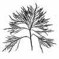
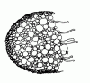
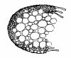
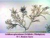
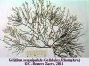
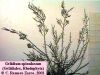

| Página de procedencia: | Algas_rojas.htm | |
|
| Contenido de esta página: | 1.- Características del orden | ||
| 2.- Cuadro Resumen | |||
| 3.- Más datos: catálogo y claves, familias: | Gelidiáceas |
||
| Gelidieláceas |
|||
| Para las referencias véase | Algas_bibliografia.html | ||
| Para los términos véase: | Ecología y distribución: |
Algas_Introduccion.htm | |
| Tipos de talo: |
Biologia_Marina.html |
||
| Términos específicos de algas rojas: |
Algas_rojas.htm |
||
| Términos utilizados en las claves de Gelidiales: |
#Terminos |
|
 |
|
|
|
|
|
 |
|
|
|
 |
|
|
|
|
| Géneros |
Especies |
Talos |
Imágenes |
|---|---|---|---|
| Gelidiella (Gelidielácea) |
G. nigrescens | Tetrasporocistes ordenados en
estiquidios apicales Arbolillo con ramas cilíndricas, cespitoso, ramificación
lateral irregular
|
|
| Gelidium (Gelidiácea) |
Tetrasporocistes desordenados
(o planta gametofítica sin tetrasporocistes) Cistocarpos con dos orificios Ricinas en la parte exterior de la médula Talo en arbolillo con ramas cilíndricas o aplanadas,
ramificación generalmente pinnada
|
 |
|
| G. latifolium | Talo
de 4-20 cm, ramas
oblícuas, agudas o redondeadas; frondes
irregulares |
 |
|
| Talo 1-2 cm, poco ramificado, ramas cilíndricas |
|||
| G. pectinatum | Talo c. 8 cm, ramas agudas en
ángulo de 90º |
||
| G. pusillum | Talo
cespitoso de 0,5-5 cm; ramas cilíndricas o aplanadas |
 |
|
| G. sesquipedale | Talo
de 10-30 cm; ramas cortas y
redondeadas, frondes alargados |
 |
|
| G. spinulosum | Talo de 2-8 cm;
ramas con bordes dentados o
espinositos |
 |
|
| Pterocladia (Gelidiácea) |
P. capillacea | Tetrasporocistes desordenados (o planta
gametofítica sin tetrasporocistes) Cistocarpos con un orificio Ricinas en la parte interna de la médula Talo en arbolillo con ramas aplanadas, ramificación
generalmente pinnada
Talo de 5-20 cm; ramas redondeadas; frondes
de contorno triangular
|
 |
| 1. |
Cistocarpos con dos cavidades
y dos orificios. Ricinas
situadas en la parte exterior de la médula, en contacto con
el córtex |
Gelidium |
| 1. |
Cistocarpos con una sola
cavidad y un solo orificio. Ricinas
situadas en la parte interna de la médula |
Pterocladia |
| 1. |
Ejes
de la parte erecta del talo y sus ramificaciones cilíndricas o
ligeramente aplanadas, de hasta 1 mm de diámetro, a veces con
las puntas más anchas |
2 |
| 1. |
Ejes
y ramas cláramente aplanadas, de 1-4 mm de anchura |
5 |
| 2. |
Frondes erectos de más
de 2 cm, dos o tres veces ramificados |
("G. crinale")
|
| 2. |
Frondes erectos de menos de 2
cm, simples o poco ramificados |
3 |
| 3. |
Ricinas
observables en sección transversal; tetrasporocistes aislados o
en grupos desordenados |
|
| 3. |
Ricinas
ausentes o presentes sólo en las partes más viejas;
tetrasporocistes ordenados en estiquidios terminales |
4 |
| 4. |
Frondes erectos de 1-2 cm | |
| 4. |
Frondes erectos de menos de 1 cm | véase Gelidiella |
| 5. |
Borde
de las ramas con proliferaciones irregulares en forma de espinitas |
G.
spinulosum |
| 5. |
Ramas
sin proliferaciones espiniformes |
6 |
| 6. |
Frondes erectos de menos de 2 cm
en general |
G. pusillum |
| 6. |
Frondes erectos de más de
2 cm en general |
7 |
| 7. |
Frondes
de forma irregular, talo generalmente de 4-10 cm de altura, a veces
más, pero en ese caso con ramitas agudas (terminadas en punta) |
8 |
| 7. |
Frondes
con forma más o menos definida, triangulares o rectangulares,
talo generalmente de 10-30 cm de altura, con ramitas obtusas
(redondeadas en el ápice) |
9 |
| 8. |
Ramitas de último orden
obtusas o agudas, dispuestas formando un ángulo menor de 90
grados con la rama de la que nacen |
G. latifolium |
| 8. |
Ramitas agudas, formando un
ángulo de 90 grados con la rama de la que nacen |
G. pectinatum |
| 9. |
Ramitas
de último orden numerosas y pequeñas en relación
con la rama de la que nacen, formando frondes alargados de contorno
aproximadamente rectangular |
|
| 9. |
Ramitas
de último orden poco numerosas y de tamaño decreciente
hacia el ápice de la rama de la que nacen, formando con
ésta frondes de contorno aproximadamente triangulares |
véase
Pterocladia |